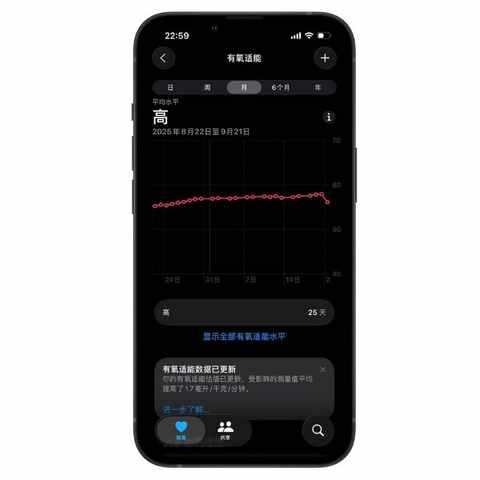
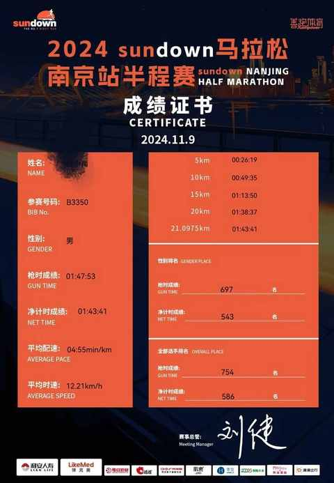
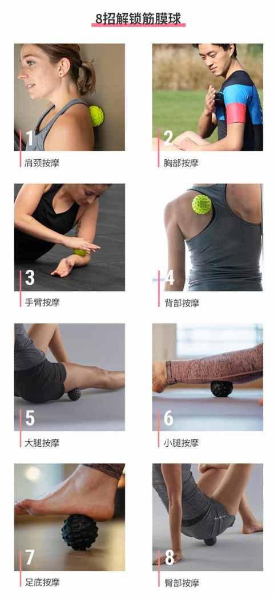
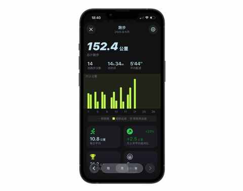
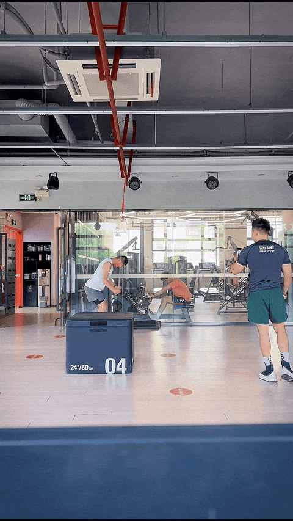
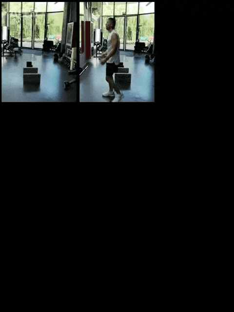
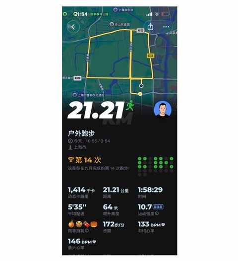

完成75%！跑步两年首次挑战月跑200km，分享这4个真实感受
一、为什么增加跑量到 200km
① 200km是未触及的月跑量
在查看跑量数据的时候发现，两年多来没有一个月的跑量是达到 200km，目前最多的一个月份是 2024 年的 10 月，跑了 176.1km。

② 时机合适
开学后气温有明显下降趋势，换算下是每周 50km，根据每次的距离动态调整，预计每周要跑 3-5 天，身体状态基本恢复到上半年水平。

③ 想刷新 PB
10 月底（桐庐半马）和 11 月初（合肥半马）有两场半马，想通过跑量的增加来提高跑步能力，从而在比赛中能表现得更好一点。
目前只参加过南京的一场小型半马比赛，得益于赛道的难度很低，最终的完赛成绩是：1 小时 43 分。

二、 4个真实感受
① 拉伸和放松是良药
跑步频次明显会比之前有提高，别看只比日常多跑 1-2 次，但身体需要一点点适应新的运动强度和节奏。
如果不做充足的拉伸和放松，恢复速度较以往慢也会影响跑步时候的状态，泡沫轴、 筋 膜枪、 筋 膜球通通整起来，推荐大家都用用筋膜球：

② 要找到自己的节奏
实测下来，跑二休一对我更友好。
之前的大部分时间我采取的都是跑一休一，反而有时候节奏容易被打乱。9 月份改成跑二休一，21 天已经跑了 14 次，有条不紊的按计划进行着。
如下图所示，9 月份还剩 9 天，已经完成 152.4km，接下来至少要跑 6 次，按照每次 10km 计算，预计9 月最终跑量在 210-220km。

③ 力量训练不能少
跑步相关的力量训练，在各个平台都有很多内容，也有不少优质的跟练视频可供参考和练习。
由于我存在一些发力方面的问题，所以采取的是每周 1-2 两次私教课的形式进行针对性的训练。


在近期也感受到显著的变化：跑得更稳，提速更快。
PS: 如果你对教练感兴趣，可以看这篇文章:
把职业，变事业：2025 年夏天，教练开了自己的健身工作室
④ 不容忽视的 LSD（ 长距离训练 ）
今天跑了一个半马，虽然心率控制的还行，但有一个原因是后面 10km 想稍微提速的时候发现提不起来，大腿、小腿、腿部都有酸胀感。

虽然跑步已经两年多，但距离 20km 以上的也就跑过 3 次，其中一次还是半马比赛，日常一个月也就跑 1-2 次超过 15km，LSD 的次数严重不足。
接下来会继续调整，尽量做到至少每两周一次，再通过 1-2 个月的时间过渡到每周一次 20km 以上的 LSD。